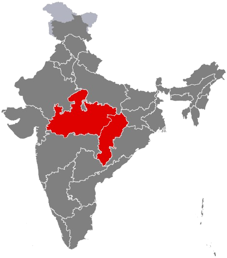

Central India
मध्य भारत / ମଧ୍ୟ ଭାରତ
Heart of India - The geographical center with rich tribal heritage, magnificent wildlife sanctuaries, ancient temple architecture, and abundant natural resources forming India's cultural and ecological core.

About Central India
Central India represents the geographical and cultural heart of the nation, encompassing dense forests, rich mineral deposits, and home to India's largest tribal populations. This region has been the seat of powerful dynasties including the Mauryas, Guptas, and Chandelas, leaving behind a magnificent architectural legacy.
From the UNESCO World Heritage temples of Khajuraho to the pristine tiger reserves of Kanha and Bandhavgarh, from ancient Buddhist stupas at Sanchi to vibrant tribal art traditions, Central India showcases the perfect harmony between nature, culture, and heritage. The region's forests are the lungs of India, while its mineral wealth powers the nation's industrial growth.
States & Union Territories

Madhya Pradesh
Heart of India - Khajuraho UNESCO temples, Kanha and Bandhavgarh tiger reserves, Sanchi Stupa, largest state by forest cover, and rich tribal heritage.
Largest State
Chhattisgarh
Rice Bowl of India - Chitrakoot waterfalls, dense Bastar forests, tribal art and culture, coal and mineral wealth, and agricultural prosperity.
Mineral RichCultural Heritage

Temple Architecture
Khajuraho UNESCO temples with exquisite Chandela sculptures, Sanchi Buddhist stupa, and magnificent medieval temple complexes showcasing architectural brilliance.

Tribal Arts & Culture
Gond paintings, Bastar crafts, tribal dances like Karma and Pandwani, indigenous music traditions, and vibrant folk art passed through generations.

Buddhist Heritage
Ancient Sanchi Stupa, Buddhist monasteries, rock-cut caves, and historical sites marking the spread of Buddhism across Central India and beyond.

Folk Music & Dance
Bundeli folk songs, Karma dance celebrating harvest, Pandwani storytelling, Raut Nacha performances, and diverse regional musical traditions.
Handicrafts & Textiles
Famous Chanderi and Maheshwari silk sarees, bell metal crafts, bamboo work, terracotta art, and traditional woodwork showcasing artisan excellence.

Ancient Rock Art
Bhimbetka rock shelters with 30,000-year-old cave paintings depicting prehistoric life, hunting scenes, and early human civilization in India.
Tourism Highlights
Khajuraho Temples
UNESCO World Heritage Site with exquisite Chandela architecture and intricate sculptures
Madhya Pradesh
Kanha National Park
Premier tiger reserve and inspiration for Rudyard Kipling's Jungle Book
Madhya Pradesh
Sanchi Stupa
Ancient Buddhist monument and UNESCO World Heritage Site with Ashokan pillars
Madhya Pradesh
Chitrakoot Waterfalls
India's Niagara Falls - widest waterfall with spectacular natural beauty
Chhattisgarh
Bandhavgarh National Park
Highest tiger density in the world with ancient fort and diverse wildlife
Madhya Pradesh
Bhimbetka Caves
UNESCO site with 30,000-year-old prehistoric rock paintings and ancient art
Madhya PradeshCentral Indian Cuisine

Wheat-Based Staples
Bafla, dal-bati-churma, poha (flattened rice), and various wheat preparations served with ghee and aromatic dal
Tribal Delicacies
Bamboo shoot curry, mahua flower dishes, forest mushrooms, and indigenous recipes using locally foraged ingredients
Street Food Culture
Famous Indori poha, spicy namkeen varieties, crispy jalebi, samosas, and vibrant street food scenes in every city
Sweets & Desserts
Malpua, kheer, gur-based sweets, mawa-bati, and traditional festival delicacies made with jaggery and ghee
Festivals & Celebrations

Tribal Festivals
Karma Puja celebrating nature, Sarhul welcoming spring, Madai festivals with unique traditions honoring forests and harvest
Khajuraho Dance Festival
Week-long classical dance performances by renowned artists against the stunning backdrop of ancient temple architecture
Teej & Hartalika
Women's festivals celebrated with traditional songs, swings, colorful attire, and community gatherings during monsoon season
Dussehra Celebrations
Grand Ramlila performances, effigies of Ravana, cultural programs, and traditional celebrations across towns and villages
Economy & Industries
Regional GDP
Growing economic contributor
Forest Cover
Lungs of India
Tiger Population
Highest concentration
Key Industries
- Mining & Minerals - coal, iron ore, diamonds, bauxite
- Steel & Heavy Industries - manufacturing hubs
- Power Generation - thermal and renewable energy
- Tourism - heritage sites and wildlife sanctuaries
- Textiles - Chanderi and Maheshwari silk production
Agricultural Products
- Rice, Wheat - major cereal production
- Pulses, Oilseeds - lentils, soybean cultivation
- Cotton, Sugarcane - important cash crops
- Medicinal Plants - traditional herbs and forest produce
- Fruits & Vegetables - diverse horticultural production
Notable Personalities
Central India has produced courageous freedom fighters, legendary artists, and visionaries who have shaped India's cultural and historical narrative.

Rani Lakshmibai
Madhya Pradesh (Jhansi)
1828-1858
Queen of Jhansi who led her army against British forces during 1857 Revolt. Symbol of courage and resistance in India's freedom struggle.

Chandrashekhar Azad
Madhya Pradesh (Bhavra)
1906-1931
Revolutionary freedom fighter who vowed to remain "Azad" (free). Led armed resistance against British colonial rule until his final stand.

Lata Mangeshkar
Madhya Pradesh (Indore)
1929-2022
"Nightingale of India" with a career spanning seven decades. Recorded thousands of songs in multiple languages. Bharat Ratna recipient.

Kishore Kumar
Madhya Pradesh (Khandwa)
1929-1987
Versatile playback singer, actor, composer, and director. Known for his unique voice and comedic timing in Hindi cinema.

Tantya Bhil
Madhya Pradesh
1842-1889
Legendary tribal folk hero who fought against British injustice. Known as the "Indian Robin Hood" for helping the poor and marginalized.

Veer Narayan Singh
Chhattisgarh (Sonakhan)
1795-1857
Freedom fighter who led peasant rebellion during 1857 Revolt in Chhattisgarh. Martyred for standing against British atrocities.

Kumar Gandharva
Madhya Pradesh (Dewas)
1924-1992
Innovative Hindustani classical vocalist who revolutionized traditional ragas. Known for unique style blending folk and classical music. Padma awardee.

Habib Tanvir
Madhya Pradesh (Raipur)
1923-2009
Pioneering theatre director and playwright. Founded Naya Theatre, blending folk traditions with modern storytelling. Padma Bhushan recipient.